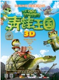

青蛙王国 (2013)

想看
看过评价：
写短评 写影评 分享到 推荐
青蛙王国的剧情简介·····
青蛙王国的预告片和图片 ‥‥‥ ( 预告片9 | 图片144 | 添加图片 )
写短评 写影评 分享到 推荐
青蛙王国的剧情简介·····
在一个遥远的地方，那里住着一群善良勇敢的青蛙，他们在青蛙王国的统领下 过着祥和安宁的生活。蛙国每四年举行一次运动会，选出优秀的勇士来保卫蛙国。现在这四年一度 的盛世又要来临了，而这届运动会与往年不同，它将左右蛙国的命运，蛙王将选取最强的勇士成为女婿。
当全国上下都热情高涨地投入到这场盛会时，谁也没有想到的是，作为主角的公主竟然离 家出走了，而且还参加了运动会。本想找回自尊的公主遇到劲敌闪电蛙的同时，也陷入一场惊天阴谋 ！
住在蛙过附近的蛇王曾经被年轻的青蛙国王砍断尾巴，对蛙过怀恨在心。多年来，蛇王 一直企图征服蛙国为蛇国积蓄力量，为此悄悄恢复元气，秘密武器也即将研制成功。他派出蛙国叛徒参加运动会计划夺冠，接机控制蛙国。
察觉到的公主、“小雨点”和伙伴们采取了行动，新一轮的蛇娃大战一触即发······
青蛙王国的预告片和图片 ‥‥‥ ( 预告片9 | 图片144 | 添加图片 )
> 更多短评468条
选座购票
豆瓣售价40元起